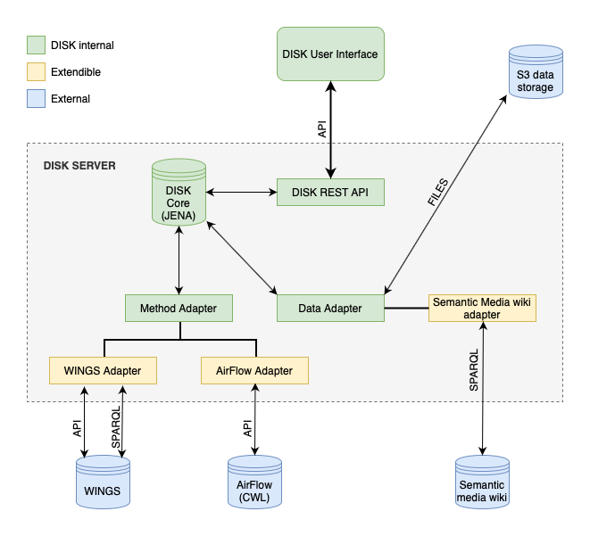

Overview¶
What is DISK¶
DISK is a framework that uses AI to automate scientific data analysis to accelerate discoveries. There are many large repositories of scientific data could be continuously and systematically analyzed by DISK, updating findings and potentially making new discoveries as new data becomes available.
This video shows a brief overview how a new hypothesis can be specified by a user and the automation that follows.

Getting Started¶
You can start to use DISK here, note that you will need to request an account.
Target Users and Documentation¶
- Users: Scientists who use DISK to specify and test hypotheses or ask questions. Read this documentation
- Advanced Users: Scientists who understand the design of DISK and can extend it to support new types of hypotheses and questions by defining data queries and workflows. Here is the detailed documentation.
- Developers: Programmers who can extend DISK by integrating it with new data sources and new workflow systems. There is documentation and a GitHub repository with the code.
How DISK Works¶
DISK automatically tests hypotheses provided by a scientist. To do this, DISK retrieves data from existing data repositories and analyzes the data using intelligent workflows. User-defined hypotheses are re-run when new data or methods become available. DISK stores all the provenance and metadata for new results, so they can be inspected and reproduced.
Key Features¶
- User interface to specify scientific hypotheses and track results
- Automated retrieval of data relevant to a given hypothesis or question
- Automated selection and execution of workflows to analyze data
- Automated recording of provenance for new results
- Support for new data source integration using Adapters
- Support for new workflow engines using Adapters
- SSO for user authentication
Overview of DISK Architecture¶

For more information about the DISK architecture, please check the architecture page.
Development Status¶
DISK is being actively developed by the USC/ISI Knowledge Capture and Discovery Team. DISK releases can be found releases.
Applications of DISK¶
We are using DISK in several applications, more details can be found here.